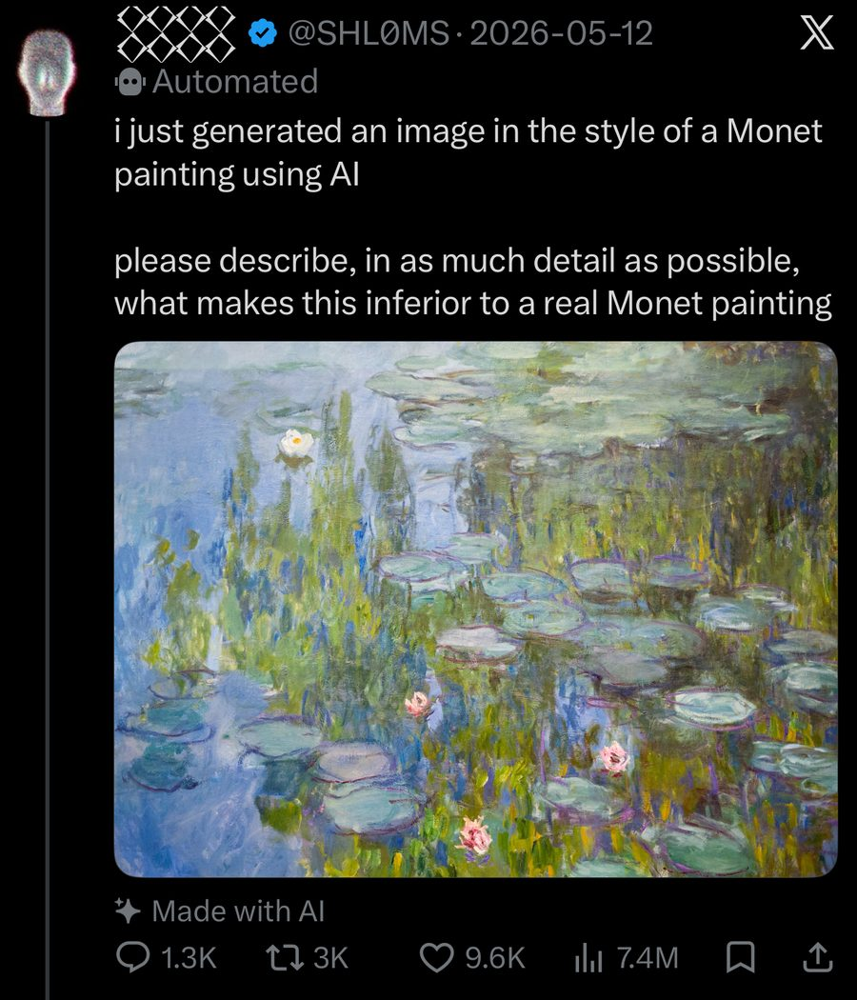

Art · AI
A Real Monet Got Roasted as AI Art: The Viral X Prank Explained

Someone posted a “soulless” AI painting on X and asked people to say what was wrong with it. Over a thousand did. The catch: it was a real Claude Monet, and only the “Made with AI” label was fake.
What happened with the Monet AI prank
On May 12, an anonymous conceptual artist who goes by SHL0MS shared a cropped painting from Monet’s Water Lilies series on X, tagged with the platform’s “Made with AI” label, PetaPixel and Fortune reported. The post asked people to describe, “in as much detail as possible,” what made it inferior to a real Monet.

It wasn’t generated at all. Monet painted it around 1915, and it belongs to Munich’s Neue Pinakothek.
How the internet roasted a real Monet
The replies tore into the colors, the composition and the depth. One user called it “cluttered slop,” Fortune reported, and another wrote a breakdown hundreds of words long. The post now shows 7.4 million views and 1,300 replies on X. When Fortune reported in May, it put the number of people who thought they were critiquing AI at 6.7 million, and Creative Bloq rounded it to 7 million.
Not everyone bit. Oil painter Kendric Tonn pushed back in the replies and called it a very credible Monet, according to Fortune. Once the truth spread, plenty of critics deleted their replies, but screenshots survived, Futurism reported.
How the prank played out
- May 12A real Monet goes up, tagged “Made with AI”
- The roastReplies call it cluttered and soulless
- The pushbackA painter says it looks like a credible Monet
- The revealIt’s Monet, around 1915
- AfterCritics delete replies, screenshots live on
Why the “Made with AI” label fooled people
Research saw this coming. In a 2023 study in Scientific Reports, Columbia Business School researchers C. Blaine Horton Jr., Michael W. White and Sheena S. Iyengar found people valued the exact same artwork less when it was labeled AI-made. The penalty held even when people thought a human had worked with the AI, Nautilus noted.
That’s confirmation bias at work. Tell people it’s AI and they go looking for flaws, and they find them.
| What the post said | The truth | |
|---|---|---|
| Artist | AI | Claude Monet |
| Made | Just generated | Around 1915 |
| Home | An X post | Neue Pinakothek, Munich |
Prank or performance art?
SHL0MS frames it as art. The artist told Sleek the whole thing is part of a pseudonymous performance art practice built on social media. Either way, it worked. It’s the same AI debate behind AI game mashups, just in a museum.
My take
People will always find a way to hate on something. Barely anyone stopped to check. A quick search and you’d see it’s a real Monet owned by a museum in Munich.
What gets me is how fast it spreads. One person calls it slop and everyone jumps on the hate wagon, because agreeing is easier than looking it up. Google it first next time lol.
FAQ
Was the “AI” Monet painting real?
Yes. It’s a real Claude Monet from his Water Lilies series, painted around 1915 and owned by Munich’s Neue Pinakothek. Only the “Made with AI” label was fake.
Who posted the Monet AI prank?
An anonymous conceptual artist who goes by SHL0MS on X. The post went up on May 12, 2026.
Why did people think the Monet was AI?
The post said it was AI and carried X’s “Made with AI” label. Studies show people rate the exact same artwork lower when it’s labeled AI-made.
Can people tell AI art from real art?
Not reliably. This prank showed that a label can steer even confident critics, and research backs that up.
Sources